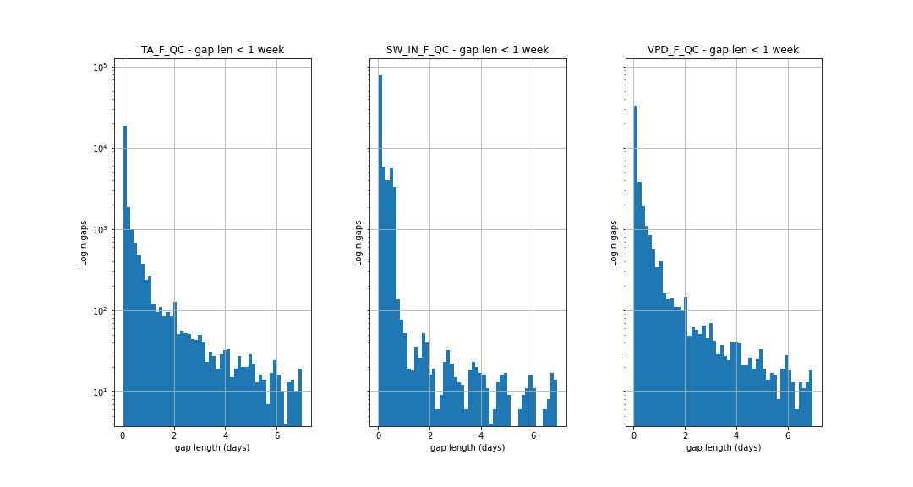
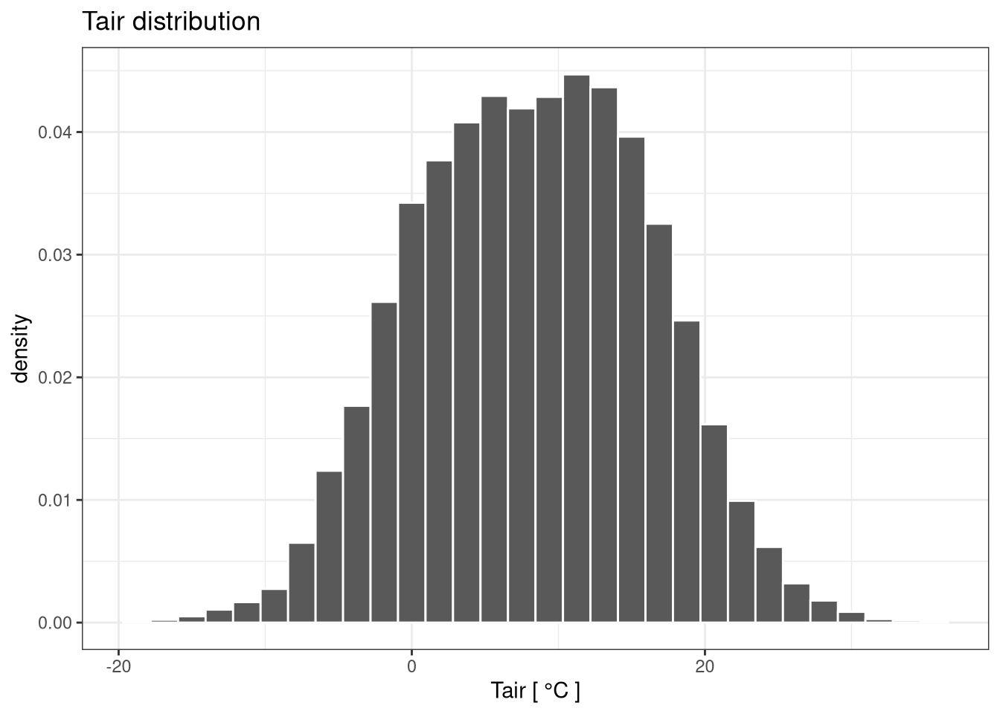
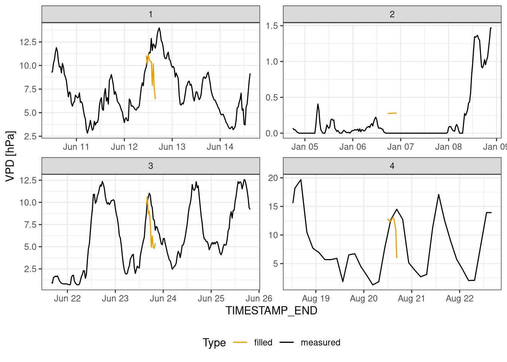
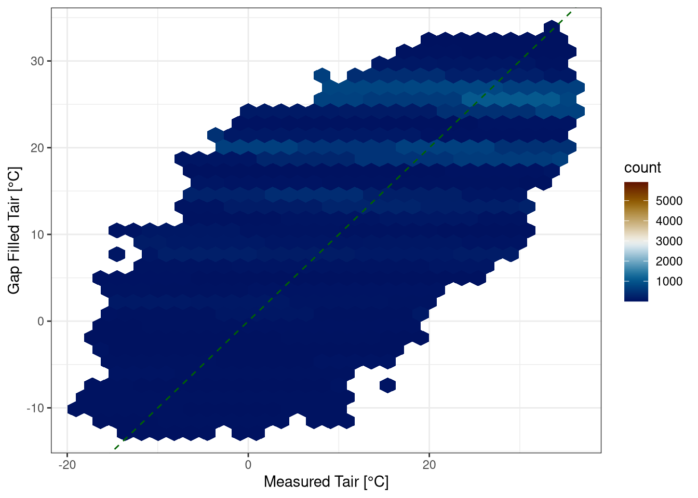

Example of Kalman Filter \(A=1\)
Meterological Time series Imputation using Kalman Filters
Simone Massaro - Bioclim seminar 18 Jan 2023
Outline
- Introduction
- Kalman Filter
- Preliminary results
- Next steps
1. Introduction
Background
- EC tower measures also meteorological variables (eg. air temperature, wind speed)
- technical issues (eg. broken sensor) result in meteo time series with gaps
- Presence of gaps is a problem in many EC data applications (eg. ecosystem modelling)
Dataset
- Fluxnet 2015 data from Hainich (more 20 years)
- Global meteo dataset (downscaled ERA-Interim from Fluxnet 2015)
- meteorological measurements every 30 mins
- focusing on 3 variables
- Air temperature:
TA - Incoming shortwave radiation:
SW_IN - Vapour Pressure Deficit:
VPD
- Air temperature:
Gap len distribution in Fluxnet

plot of distribution of gaps for all TA, SW_IN and VPD for all sites. 26 millions total obs
Gap len distribution in Fluxnet
plot of distribution of small gaps (<1 week) for all TA, SW_IN and VPD for all sites. 26 millions total obs
How to fill gaps
- use previous and following measurements for one variable and temporal auto-correlation (eg. diurnal cycles)
- correlation with other variables measures (eg. solar radiation and temperature)
- other measurements of meteo variables (eg. nearby station)
State of the art
OneFlux pipeline (Fluxnet + ICOS + AmeriFlux)
Short and medium gaps using Marginal Distribution Sampling (MDS)
Long gaps filled with ERA data (global meteo dataset) using linear transformation to reduce site bias
How MDS (Marginal Distribution Sampling) works
- take a time window (7 days) around the gap
- use 3 predictors variables (
TA,SW_INandVPD) and divide them in n discrete bins - for each bin (combination of conditions) find the average value of the missing variable
- for each gap find the closest condition and fill with the average value
- if necessary increase the time window
- quality flag depends on the time window size

MDS - gap filling TA

MDS - gap filling SW_IN

MDS - gap filling VPD
Current approaches limitations
- don’t consider the observations before and after the gap
- Either MDS (variable correlation) or ERA data, don’t combine the information
- No uncertainty for the predictions (only a quality flag)
Thesis goal
- develop model to impute missing data in meteorological time series
- include all 3 imputation approaches
- provide an uncertainty of the predictions
3. Model: Kalman Filter
How Kalman Filter works
Models over time a latent variable (we are not observing it), the state of the system.
The current state \(x_t\) depends using:
- the previous state \(\color{blue}{x_{t-1}}\)
- current observation \(\color{green}{y_t}\)
- control variable \(\color{purple}{c_t}\) (ERA data)

1. Previous state
\[ x_t = A\color{blue}{x_{t-1}} + \varepsilon \] where:
- \(x_{t}\) is the current state
- \(\color{blue}{x_{t-1}}\) is the previous state
- \(A\) is a linear transformation of \(\color{blue}{x_{t-1}}\)
- \(\varepsilon\) is the “process” noise which is a random variable with a normal distribution with mean 0
2. Current Observation
\[ \begin{aligned}x_t &= A\color{blue}{x_{t-1}} + \varepsilon \\\color{green}{y_t} &= Hx_t + \nu\end{aligned}\]
where:
- \(\color{green}{y_{t}}\) is the current observation
- \(H\) is a linear transformation of \(\color{green}{y_{t}}\)
- \(\nu\) is the “observation” noise which is a random variable with a normal distribution with mean 0
using the rules of probabilistic inference if we observe \(y_t\) you can update the distribution of \(x_t\)
Example of Kalman Filter \(H=1\) \(A=1\)
Gaps
Example of Kalman Filter \(H=1\) \(A=1\)
3. Control variable
\[ \begin{aligned}x_t &= A\color{blue}{x_{t-1}} + B\color{purple}{c_t} + \varepsilon \\\color{green}{y_t} &= Hx_t + \nu\end{aligned}\]
where:
- \(B\) is a linear transformation of \(\color{purple}{c_t}\)
Use the difference between current and previous value of control variable
Example of Kalman Filter \(H=1\) \(A=1\) \(B=[-1,1]\)
Extra: Variable correlation
Gap in two variables
Gap in only one variable
How to find model parameters
- create artificial gaps
- predicting gap in the model
- compute the log likelihood of the predictions
- maximise the log likelihood
Kalman Filter
pros:
- Probabilist model: the output of the model is a distribution of predictions, not a single value
- Combines all 3 approaches to gap filling in one model
- interpretable paramters
- computationally efficient
cons:
- keeps tracks only of the local state
2. Preliminary results
Kalman Filters gap #1
Kalman Filters gap #2
Kalman Filters gap #3
Next steps
What is missing in the model development
- improve numerical stability of model (work in progress)
- find optimal settings for training and inference
- n observations before after/gap
- how to best generate artificial gaps
- How to assess the model?
Use of gap filling
- what is the impact of better gap filling for data users?
- why better filling for short/medium gaps is useful
- how can the uncertainty be used
How to assess the model? settings
- how to choose gap lengths?
- how to choose number of variables missing?
- which variable to focus on?
How to assess the model? Metrics
- RMSE - interpretation difficult as it’s relative to the variable
- r2 - gaps are often too short to interpret properly
- ?
How to assess the model? Figures
Time series
Scatter plots

How to assess the model? Figures
Gap length / mean RMSE

Distribution gaps vs filled

Future outlook
- optimize performance model
- provide pre-trained model on Fluxnet 2015 and then to fine-tune to local site
- provide web-service for filling gaps
- reprocess Fluxnet 2015 dataset
Questions & Comments
Github repo: https://github.com/mone27/meteo_imp
Website: https://mone27.github.io/meteo_imp
Presentation: https://mone27.github.io/meteo_imp/presentations/presentation_bioclim_18_jan_23.html